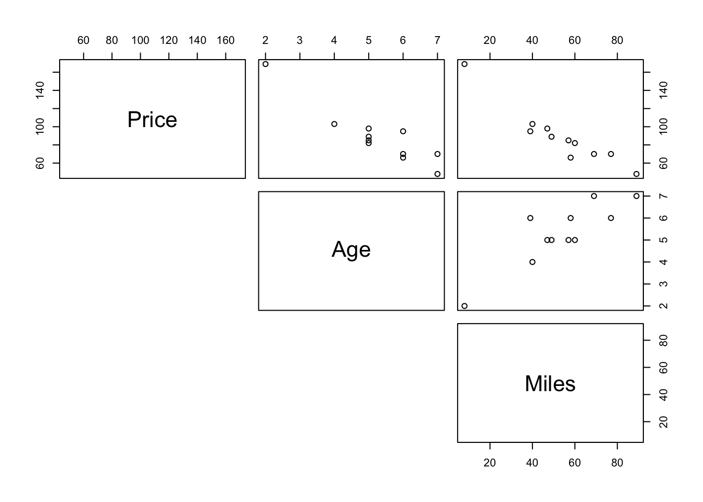
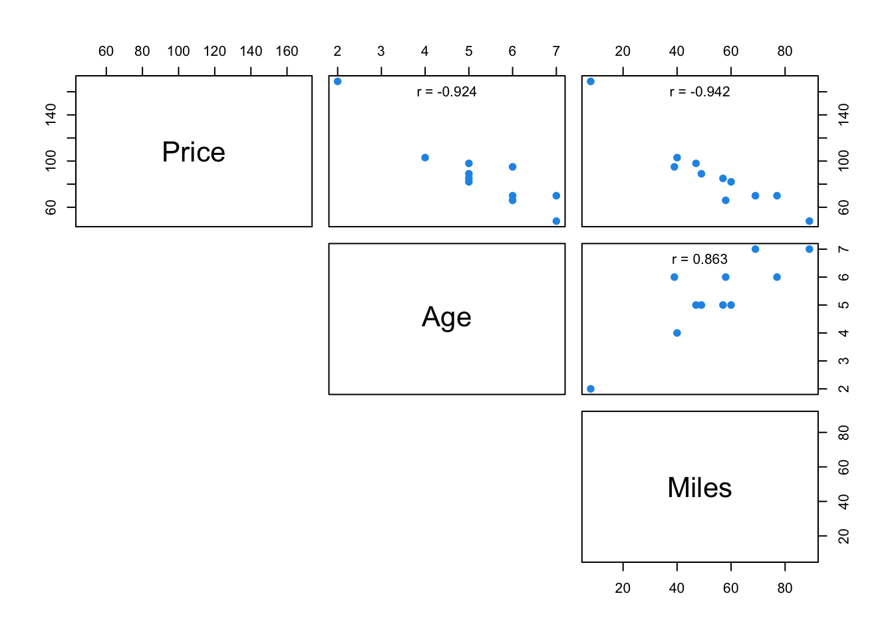
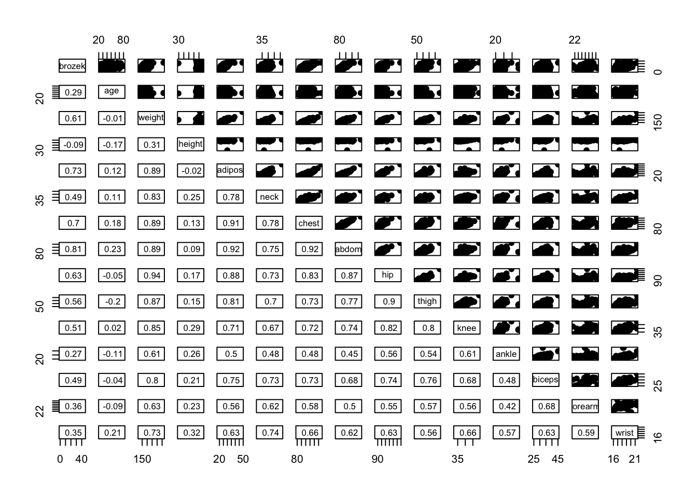
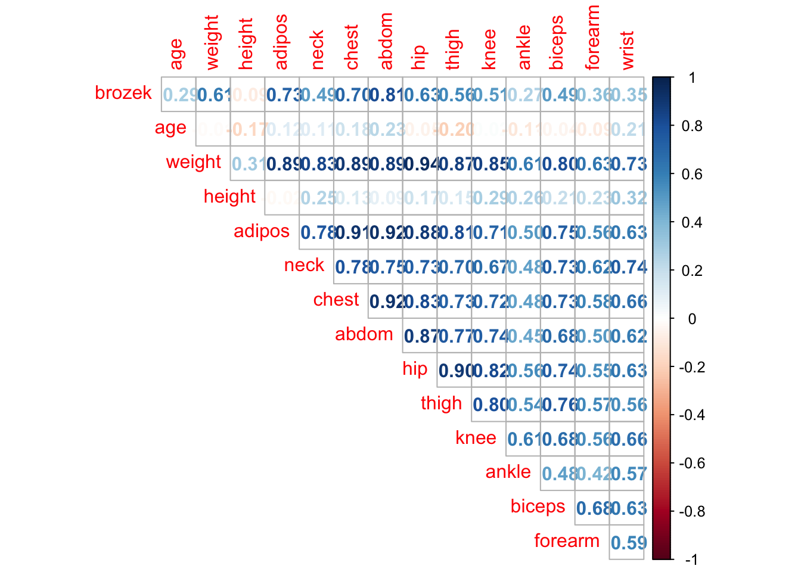
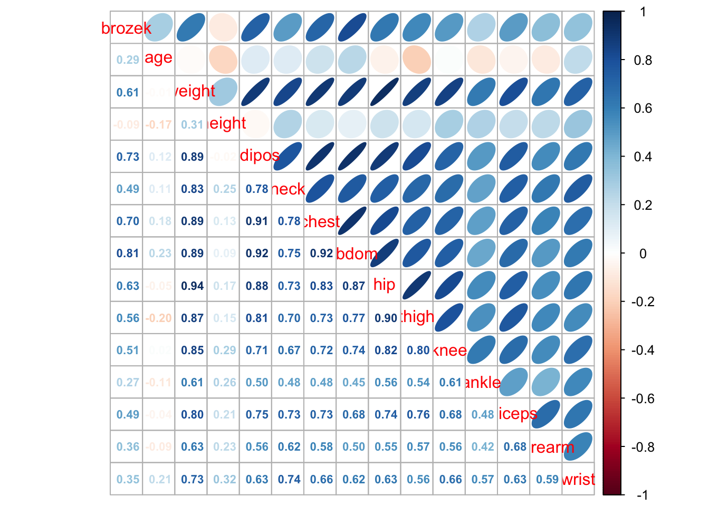
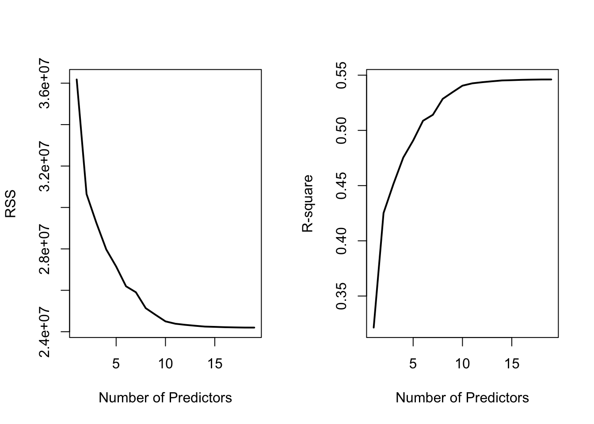
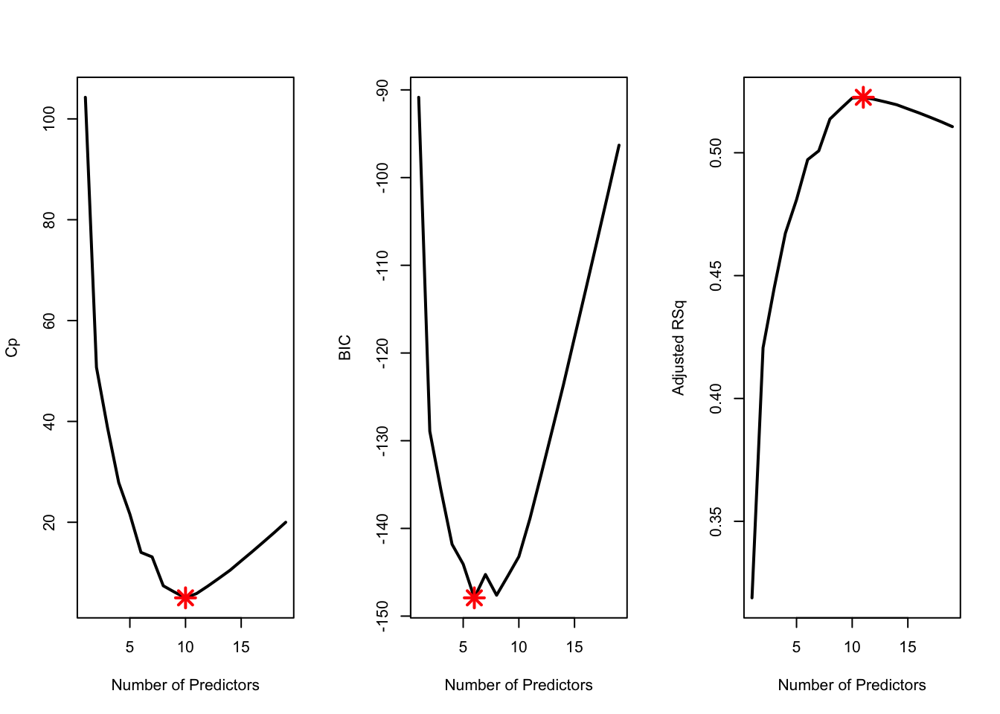

Chapter 4 Multiple Linear Regression
4.1 Exploring Data With Multiple Predictor Variables
Pairs Plot (Scatterplot Matrix)
To see how any pairs of variable in a data are related use pairs(data). For an example with carSales data from Section 3.6,
#can make it symmetric on diagonal by leaving as `pairs(carSales)`
pairs(carSales, lower.panel = NULL)
The upper panel here can be customised by making a new function
Example from Section 3.6
# Customize upper panel
upper.panel <- function(x, y){
points(x,y, pch=19, col=4)
r <- round(cor(x, y), digits=3)
txt <- paste0("r = ", r)
usr <- par("usr"); on.exit(par(usr))
par(usr = c(0, 1, 0, 1))
text(0.5, 0.9, txt)
}
pairs(carSales, lower.panel = NULL,
upper.panel = upper.panel)
Example from Practical 2
panel.cor <- function(x, y){
usr <- par("usr"); on.exit(par(usr))
par(usr = c(0, 1, 0, 1))
r <- round(cor(x, y), digits=2)
txt <- paste0(" ", r)
text(0.5, 0.5, txt, cex = 0.8)
}
# Customize upper panel
upper.panel<-function(x, y){
points(x,y, pch = 19)
}
# Create the plots
pairs(fat1,
lower.panel = panel.cor,
upper.panel = upper.panel)
Using corrplot Package
library(corrplot)Examples from Practical 2
corrplot(cor(fat1), method = "number", type = "upper", diag = FALSE)
corrplot.mixed(cor(fat1), upper = "ellipse", lower = "number",number.cex = .7)
Plots To Show Isses Due To Multicollinearity and \(p\) close to \(n\)
To see how to plot how ridge regression lowers variance when we have the problem of multicollinearity and \(p\) close to \(n\) see notes section 6.2 in notes.
4.2 Basics of Building an MLR Model (Including Transformations)
Build a Model With Specific Predictors
model <- lm(Y ~ X1 + X2 + ... + Xn, data=data)Build a Model With All Predictors
model <- lm(Y ~ ., data=data)Build a Model With Specific Predictors Removed
model <- lm(Y ~ . - X1 - X2, data=data)Example Including Transformations
model <- lm(Y ~ X1 + X2*X3 + log(X4) + I(X5^2), data=data)Note that X2*X3 includes the predictors X2, X3 and their product X2 x X3.
Inference is much the same as with SLR.
4.3 Multicollinearity Detection and VIF
To calculate VIF value for each predictor in a model simply use vif() function from car library.
library(car)
vif(reg)## Age Miles
## 3.907129 3.9071294.4 Model Selection
The following subsection follows closely to Practical Demonstration 5.4. Most examples will be from there.
Best Subset and Forward/Backward Stepwise Selection (Using Selection Criteria)
Best Subset Selection is done using regsubsets() function from leaps library.
library(leaps)#function for best subset selection
best = regsubsets(Salary ~ ., Hitters, nvmax=19)
results = summary(best)
names(results) #gives the names of the predictors chosen by best subset selection## [1] "which" "rsq" "rss" "adjr2" "cp" "bic" "outmat" "obj"nvmax=19 specifies that you want all 19 models and not just up to the best one.
Data you can extract from output of regsubsets()
RSS = results$rss
r2 = results$rsq
Cp = results$cp
BIC = results$bic
Adj_r2 = results$adjr2
cbind(RSS, r2, Cp, BIC, Adj_r2)## RSS r2 Cp BIC Adj_r2
## [1,] 36179679 0.3214501 104.281319 -90.84637 0.3188503
## [2,] 30646560 0.4252237 50.723090 -128.92622 0.4208024
## [3,] 29249297 0.4514294 38.693127 -135.62693 0.4450753
## [4,] 27970852 0.4754067 27.856220 -141.80892 0.4672734
## [5,] 27149899 0.4908036 21.613011 -144.07143 0.4808971
## [6,] 26194904 0.5087146 14.023870 -147.91690 0.4972001
## [7,] 25906548 0.5141227 13.128474 -145.25594 0.5007849
## [8,] 25136930 0.5285569 7.400719 -147.61525 0.5137083
## [9,] 24814051 0.5346124 6.158685 -145.44316 0.5180572
## [10,] 24500402 0.5404950 5.009317 -143.21651 0.5222606
## [11,] 24387345 0.5426153 5.874113 -138.86077 0.5225706
## [12,] 24333232 0.5436302 7.330766 -133.87283 0.5217245
## [13,] 24289148 0.5444570 8.888112 -128.77759 0.5206736
## [14,] 24248660 0.5452164 10.481576 -123.64420 0.5195431
## [15,] 24235177 0.5454692 12.346193 -118.21832 0.5178661
## [16,] 24219377 0.5457656 14.187546 -112.81768 0.5162219
## [17,] 24209447 0.5459518 16.087831 -107.35339 0.5144464
## [18,] 24201837 0.5460945 18.011425 -101.86391 0.5126097
## [19,] 24200700 0.5461159 20.000000 -96.30412 0.5106270Plotting To Understand Best Subset Selection
#Plots RSS and R-square as you add more predictors
par(mfrow = c(1, 2))
plot(RSS, xlab = "Number of Predictors", ylab = "RSS",
type = "l", lwd = 2)
plot(r2, xlab = "Number of Predictors", ylab = "R-square",
type = "l", lwd = 2)
Number of predictors in optimal model under different selection criteria
which.min(Cp)## [1] 10which.min(BIC)## [1] 6which.max(Adj_r2)## [1] 11Example Plot For How Selection Criteria Change
par(mfrow = c(1, 3))
plot(Cp, xlab = "Number of Predictors", ylab = "Cp",
type = 'l', lwd = 2)
points(10, Cp[10], col = "red", cex = 2, pch = 8, lwd = 2)
plot(BIC, xlab = "Number of Predictors", ylab = "BIC",
type = 'l', lwd = 2)
points(6, BIC[6], col = "red", cex = 2, pch = 8, lwd = 2)
plot(Adj_r2, xlab = "Number of Predictors", ylab = "Adjusted RSq",
type = "l", lwd = 2)
points(11, Adj_r2[11], col = "red", cex = 2, pch = 8, lwd = 2)
Built-in Plot for Criteria
Top row is the best model under the criteria and worst is at bottom
plot(best, scale = "Cp")
The options for scale are "bic", "Cp", "adjr2" and "r2".
Extracting Coefficients for Best Model (at a specific number of predictors)
coef(best, 10) #Cp## (Intercept) AtBat Hits Walks CAtBat CRuns
## 162.5354420 -2.1686501 6.9180175 5.7732246 -0.1300798 1.4082490
## CRBI CWalks DivisionW PutOuts Assists
## 0.7743122 -0.8308264 -112.3800575 0.2973726 0.2831680The number here which is k=10 corresponds to model M_k. We found this from which.min(Cp).
Best Subset Selection (Using Validation)
‘regsubsets()’ does not have a built-in function to do best subsey selection using validation so we use a custom function (copy and paste).
predict.regsubsets = function(object, newdata, id, ...){
form = as.formula(object$call[[2]])
mat = model.matrix(form, newdata)
coefi = coef(object, id = id)
xvars = names(coefi)
mat[, xvars]%*%coefi
}objectshould be the result of a call toregsubsetsnewdatashould be data frame with data from validation set inidspecifies we want to use the model fromobjectwithidpredictors
Splitting Data into Training and Validation
As a rough guide, split the data approximately 2:1 for Training:Validation.
dim(Hitters)
training.obs = sample(1:263, 175)
Hitters.train = Hitters[training.obs, ]
Hitters.test = Hitters[-training.obs, ]Best Subset Validation
The regsubsets call:
best.val = regsubsets(Salary ~ ., data = Hitters.train, nvmax = 19)Iterate through every number of predictors and calculate the MSE between prediction and observed (from validation set).
val.error <- c()
for(i in 1:19){
pred = predict.regsubsets(best.val, Hitters.test, i)
val.error[i] = mean((Hitters.test$Salary - pred)^2) #MSE
}
val.error #stores 19 models validation MSE## [1] 184681.2 156480.0 149494.1 151313.5 143359.5 135568.3 130244.2 132420.8
## [9] 123067.6 120899.4 121341.9 121782.1 122432.5 121790.2 123035.7 126641.5
## [17] 127907.9 128072.5 128076.9Index with smallest MSE is best number of predictors
which.min(val.error) ## [1] 10Inference
After choosing optimal model with best subset selection using a validation set, before inference, you must train the model in the entire data set.
coef(best.val, 10) # Check which variables to use in the lm.## (Intercept) AtBat Hits Walks CAtBat CRuns
## 192.7302290 -1.4186186 5.0886854 3.6054574 -0.2270754 1.8464411
## CRBI CWalks DivisionW PutOuts Assists
## 0.9312329 -0.7122134 -92.5577224 0.1669808 0.1748587ls10 = lm(Salary ~ AtBat + Hits + Runs + Walks + CAtBat + CRuns + CRBI + CWalks + Division + PutOuts, data = Hitters)Usual inference can follow.
Note: using a validation set means the choice of the best model is random, depending on how you selected which observations were used for training and which were used for validation.
Best Subset Selection (Using Cross-Validation)
Doing cross-validation is generally preferable to regular validation as it utilises entire data set for training and testing.
Continuing with Hitters data from Example 5.4,
best = regsubsets(Salary ~ ., data = Hitters, nvmax = 19)This method requires manually specifying the models you include in the cross-validation. So, for this example, we use cross-validation to compare the three models suggested by \(C_p\), BIC and adjusted \(R^2\). (Recall: could use coef(best,10) to find coefficients in \(C_p\) model since \(C_p\) found 10 predictors was best).
Train Models on Entire Data Set
ls10 = lm(Salary ~ AtBat + Hits + Walks + CAtBat + CRuns + CRBI + CWalks +
Division + PutOuts + Assists, data = Hitters)
ls6 = lm(Salary ~ AtBat + Hits + Walks + CRBI + Division + PutOuts,
data = Hitters)
ls11 = lm(Salary ~ AtBat + Hits + Walks + CAtBat + CRuns + CRBI + CWalks +
+ League + Division + PutOuts + Assists, data = Hitters)Creating The Folds
Using \(k = 10\) folds,
k = 10
folds = cut(1:263, breaks=10, labels=FALSE)
table(folds)## folds
## 1 2 3 4 5 6 7 8 9 10
## 27 26 26 26 27 26 26 26 26 27However, currently the folds are not random, the first fold is just the first 27 entries. We can randomly shuffle the folds using sample.
set.seed(2)
folds = sample(folds)
folds## [1] 8 10 8 7 3 5 3 6 9 2 3 4 5 9 7 2 10 5 7 6 2 10 8 6 4
## [26] 1 5 8 7 5 10 4 5 10 8 8 1 5 9 2 2 10 8 10 1 1 7 9 2 6
## [51] 5 8 3 4 8 2 1 6 8 10 5 7 2 3 7 7 1 1 7 3 9 8 4 3 6
## [76] 7 5 5 10 2 5 6 2 1 4 5 9 1 3 3 8 3 10 8 6 1 2 6 1 4
## [101] 9 6 4 10 9 1 9 7 9 8 4 8 6 1 10 2 10 10 7 9 3 9 4 4 5
## [126] 6 10 3 9 2 8 8 6 2 2 6 1 9 1 10 7 4 2 4 8 5 8 1 6 3
## [151] 1 10 10 1 3 3 3 7 3 4 2 9 4 6 8 9 7 2 1 7 4 3 5 7 8
## [176] 4 9 7 9 5 2 1 1 6 4 4 5 10 6 5 1 10 9 7 3 1 5 2 7 7
## [201] 4 6 7 10 3 6 5 10 4 9 9 5 7 7 2 6 9 5 5 3 2 3 5 5 9
## [226] 3 6 1 1 9 8 6 8 9 10 4 4 10 10 5 2 3 3 6 3 4 10 9 6 2
## [251] 1 8 6 7 8 4 2 8 1 10 2 7 4Calculating The CV Errors
We first create a matrix to store the CV errors,
cv.errors = matrix(NA, nrow = k, ncol = 3,
dimnames = list(NULL, c("ls10", "ls6", "ls11")))
cv.errors ## ls10 ls6 ls11
## [1,] NA NA NA
## [2,] NA NA NA
## [3,] NA NA NA
## [4,] NA NA NA
## [5,] NA NA NA
## [6,] NA NA NA
## [7,] NA NA NA
## [8,] NA NA NA
## [9,] NA NA NA
## [10,] NA NA NAThen, iterating through each fold, we obtain the CV errors,
for(i in 1:k){
#Trains models on all folds but i
ls10 = lm(Salary ~ AtBat + Hits + Walks + CAtBat + CRuns + CRBI + CWalks +
Division + PutOuts + Assists, data = Hitters[folds!=i, ] )
ls6 = lm(Salary ~ AtBat + Hits + Walks + CRBI + Division + PutOuts,
data = Hitters[folds!=i, ])
ls11 = lm(Salary ~ AtBat + Hits + Walks + CAtBat + CRuns + CRBI + CWalks +
+ League + Division + PutOuts + Assists,
data = Hitters[folds!=i, ])
#Predicts values in fold i
pred10 <- predict( ls10, newdata = Hitters[folds==i, ] )
pred6 <- predict( ls6, newdata = Hitters[folds==i, ] )
pred11 <- predict( ls11, newdata = Hitters[folds==i, ] )
#Calculates CV errors
cv.errors[i,] = c( mean( (Hitters$Salary[folds==i]-pred10)^2), #calculate MSE for cv
mean( (Hitters$Salary[folds==i]-pred6)^2),
mean( (Hitters$Salary[folds==i]-pred11)^2) )
}
cv.errors## ls10 ls6 ls11
## [1,] 132495.25 127446.51 130581.86
## [2,] 111992.83 110608.25 109426.81
## [3,] 87822.97 98247.02 87132.03
## [4,] 113161.24 98812.43 112384.13
## [5,] 225490.54 231835.72 227007.73
## [6,] 83622.26 46935.72 85460.28
## [7,] 90430.09 95275.05 91963.45
## [8,] 100105.45 106254.47 98519.80
## [9,] 97701.55 97551.93 104063.92
## [10,] 48005.26 63602.55 46157.69Calculating the means gives a performance metric for each model.
cv.mean.errors <- colMeans(cv.errors)
cv.mean.errors## ls10 ls6 ls11
## 109082.7 107657.0 109269.8